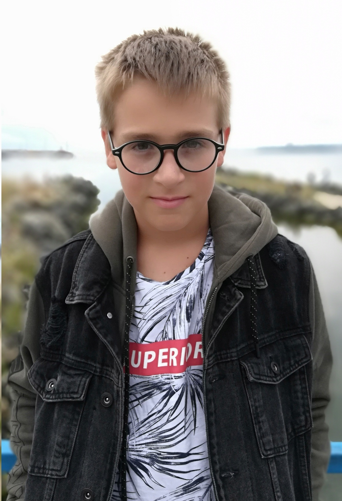

Сайт создан компанией програмистов: developers_command 
Озеров Виктор
Меня зовут Озеров Виктор, мне 15 лет. Програмированнием я начал увлекаться, когда мне было еще 9 лет.
Идея создать интерактивную карту Малаховки принадлежит Смирновой Татьяне Юрьевне, нашему любимому директору. Мысль о проекте возникла давно, но некому было заняться им. Мы с командой решили взяться за создание сайта. Проект уже реализован, но мы планируем продолжать его развивать.
Лично для меня участие в этом проекте очень интересно, благодаря нашей совместной работе я приобретаю ценный опыт создания сайтов и работы в команде.
Любимым предметом в школе всегда была математика, наверное, поэтому и увлекся программированием, так как они тесно связанны друг с другом. Несмотря на любовь к сухой, бесчувственной математике, моим хобби является игра на различных музыкальных инструментах, в котором я добился хороших результатов. Работа над проектом «Интерактивная карта Малаховки» была очень интересной и помогла приобрести много новых навыков, которые очень пригодятся в дальнейшем. Было приятно работать в команде с людьми, которые тоже увлечены процессом и так же отдаются делу. В дальнейшем хочу продолжить работу в сфере программирования и вёрстки сайтов.